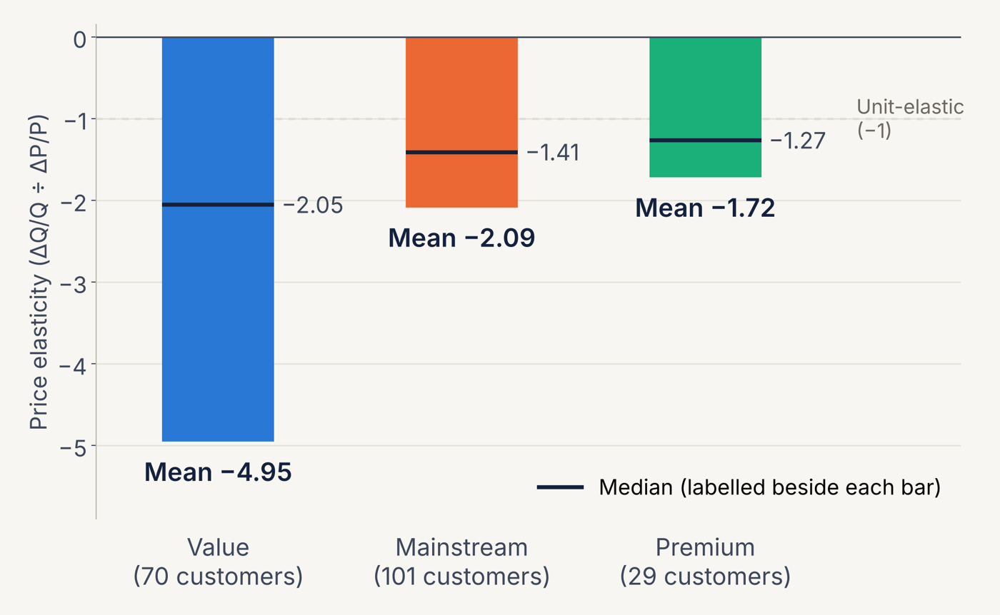

Case study · AI for Marketing
AI-Based Dynamic Pricing
What if every customer saw the price that made the most sense for them? In this exercise, I used AI to model demand for 200 customers over 16 weeks, find the most profitable price for each one and think through how a company could use personalized pricing without losing customers’ trust.
We were given weekly sales data for 200 customers in three segments (Value, Mainstream and Premium), including price, cost, loyalty, income and each customer’s willingness to pay. The exercise walked through seven steps, from exploring the data to recommending how to roll out AI-based pricing responsibly.
-
Modeled demand
I used AI to build a machine learning model that predicts how many units each customer buys at a given price. It predicted demand closely on customers it hadn’t seen before.
-
Measured price sensitivity
I calculated price elasticity for every customer-week to see how much demand drops when the price goes up, then compared the three segments.
-
Found the best prices
I tested every price from $10 to $22 in 50-cent steps and picked the one that earned the most profit for each customer-week.
Personalized prices, 16% more profit.
All figures are model predictions compared with the model’s estimate at today’s prices.


- 01
Segment sets the price level. Optimal prices averaged $10.90 for Value, $15.56 for Mainstream and $20.94 for Premium customers.
- 02
Willingness to pay fine-tunes it. Within the Value segment, customers with the highest willingness to pay were far less price-sensitive than those with the lowest.
- 03
Loyal customers would pay more. The model priced highly loyal Mainstream customers about $0.70 higher than less loyal ones, a “loyalty penalty” that could backfire if customers noticed.
- 04
Premium may have more room. 30% of Premium customer-weeks landed at the $22 cap, so their best price could be even higher.
Using AI pricing responsibly.
01
Pilot, then scale with guardrails
Test segment-level prices before personalizing, cap weekly price changes, keep prices above cost and test Premium prices above $22 in a small group first.
02
Price on things you can explain
Base prices on segment, cost and weekly events, not inferred income. Reward loyal customers instead of charging them more.
03
Keep humans in the loop
Review prices before launch, compare actual and predicted demand every week, check for fairness across groups and tell customers how prices are set.
The model was the easy part. The harder questions came after: Is a 16% gain real, or just a prediction? Should a loyal customer ever pay more than a new one? A model will happily optimize for profit, so it’s up to people to decide what’s fair.
This project connected directly to what I care about in responsible AI. Personalized pricing can work for both the business and the customer, but only with clear rules, testing and transparency built in from the start.